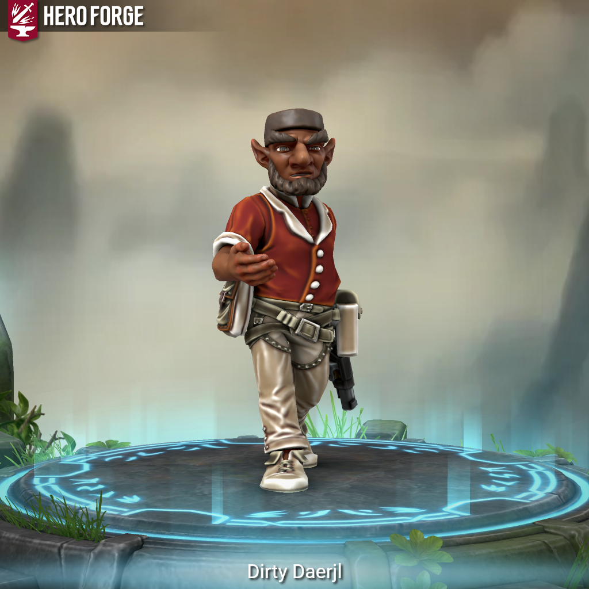

Dirty Daerjl - Is This Anything?

Meet Dirty Daerjl.
He was good at his job. Really good. Medical examiner, respected by his peers, celebrated in his field. And every paycheck, every bonus, every coin he didn’t immediately need – straight to the table.
Cards, dice, lizard races. Gambit of Ord was his game of choice, but Daerjl wasn’t picky. If there was a bet to be made, he was there to make it. And one night, he was so sure he had a sure thing that he bet everything he had. He didn’t have a sure thing.
He ran before they could stop him. Took a roundabout path to an inn, lay low, and told himself it would blow over. He went home the next morning to smashed windows, a kicked-in door, and most of his belongings in pieces on the floor. On top of the debris: a note.
“We have informed your former employer that you work for us now.”
And just like that, his credentials as a funeral director, coroner, and medical examiner became someone else’s tools. For years, he planned the disappearances. Covered up the murders. Did the dirty work and asked, regularly, when his debt would be paid off. The answer was always nothing.
One day he just didn’t go in. Left town. Didn’t look back.
He hasn’t paid off the debt. He knows they haven’t forgotten. But out here, wand in one hand and firearm in the other, he is at least on his own terms.
Dirty Daerjl is a Rock Gnome Artificer, level 10. At 2’10 and 40 pounds, he is at least 250 years old, with dark tan skin, a large bulbous nose, and dark grey hair cut flat on top. He bridges magic and technology with the precision of someone who spent a career in the details. He is a hard worker, a dedicated craftsman, and genuinely cannot walk past a card table without slowing down.
#iTA #isThisAnything #DnD #TTRPG #Homebrew #CharacterIntro #Artificer #RockGnome